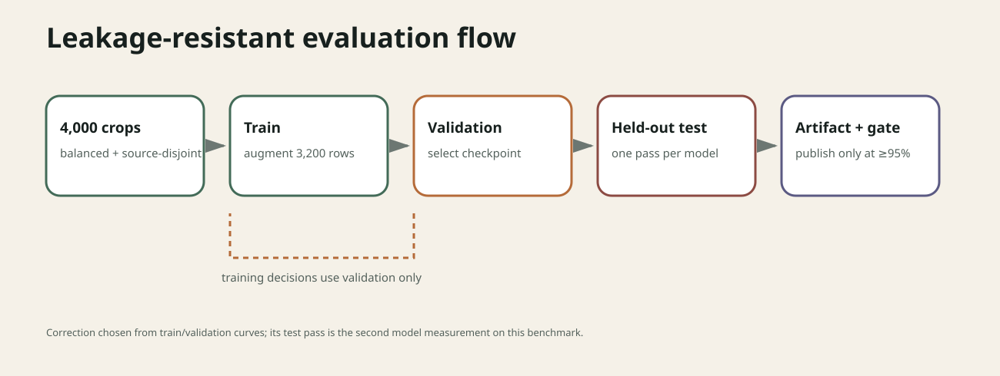

2026-09-04 · post #3
Face or Not
A small CNN reached 87%. One validation-led correction reached 98.25% on the same 400-crop test benchmark. The two successful GPU runs cost $0.25 in total.
What are we classifying?
Give the model a 128×128 image crop and it returns one of two labels: face or no_face. The label follows Open Images’ Human face annotation. This classifier does not scan a larger photo for faces, draw boxes, or identify anyone.
That narrow task is useful for a tutorial because the whole experiment fits on one page. It also forces us to get the evaluation split right before renting a GPU.

Curating 4,000 crops
We built theoriclabs/face-or-not from the official Open Images validation set. Half of the rows are face crops. For each one, the builder takes the largest accepted Human face box, rejects group boxes, depictions, and boxes smaller than one percent of the source image, then adds 25% context around a square crop.
The other half come from images where a human verifier marked Human face absent. Those rows use a centered square. Every crop is resized to 128×128 RGB.
| Split | No face | Face | Total |
|---|---|---|---|
| Train | 1,600 | 1,600 | 3,200 |
| Validation | 200 | 200 | 400 |
| Test | 200 | 200 | 400 |
All 4,000 source image IDs are unique, so a photograph cannot leak from one split into another. Training uses the 3,200-row split. Validation chooses the checkpoint. The test set supplies one final measurement for each model.

Open Images lists the selected photographs under CC BY 2.0 and licenses its annotations under CC BY 4.0. Each row keeps the author, original links, license URL, image ID, and crop coordinates. Training pins dataset revision 7c81a2453be2cb48bb0b48192db91a826108e3de; the dataset card contains the full build recipe and license caveat.
Training the model
The first run used a randomly initialized 315,426-parameter CNN. Its training and validation losses stayed close while validation accuracy was still improving, so the next attempt changed the representation instead of tuning against test examples.
The corrected model starts from torchvision’s ResNet18 IMAGENET1K_V1 weights. It has 11,177,538 parameters. The first four epochs train only a new two-class head. From epoch five onward, layer4 and the head train while the earlier layers and their batch-normalization state stay frozen. That leaves 8,394,754 trainable parameters in the second phase.

layer4 and head fine-tuning with AdamW and cosine learning-rate decay.Light crop and color augmentation run on the training split. Checkpoint selection uses validation accuracy, with validation loss breaking ties. The run stops early after six epochs without an improvement and never exceeds 30 epochs.
Run it on Compute
Download the training file, install the CLI, and add prepaid credit:
curl -fsSL https://raw.githubusercontent.com/theoriclabs/letsusecompute/main/posts/face-or-not/train.py -o train.py
curl -fsSL https://compute.cx/install.sh | sh
compute setup
compute credits add 10Dry-run checks the local payload without uploading it or creating a machine:
compute run train.py::train --gpu cheap --dry-runThen request a live quote. Compute shows the selected GPU, locked hourly rate, timeout-budget estimate, and balance before asking for confirmation.
compute run train.py::train --gpu cheap --timeout 1800 --waitThe workload downloads the pinned dataset on the machine, trains, evaluates the selected checkpoint, and writes the model plus its evidence files as a Compute artifact.
Results
The 87% baseline
Run run_5e61db1cc0b501b3bfa6d18829669c62 used a RunPod NVIDIA A100 80GB PCIe and cost $0.12. The random CNN selected epoch 23 at 90.0% validation accuracy. On its one test pass it scored 87.0% accuracy, with 88.95% face precision, 84.5% recall, and 86.67% F1.
We chose the ResNet18 correction from the training and validation curves. The aggregate 87% test score was already known, but no held-out image, identity, or per-image prediction was inspected to choose the new architecture.

The corrected run
Run run_e1abf4b4c24a49baa0d8f62e2d94a3c3 used the same RunPod A100 class. It ran for 146.379 seconds, completed 23 epochs, and selected epoch 17 at 98.5% validation accuracy.
- Test accuracy
- 98.25%
- Face precision
- 98.98%
- Face recall
- 97.50%
- Face F1
- 98.24%
This is the second model evaluated on the same test benchmark. Its single test pass got 393 of 400 crops right: two false positives and five false negatives.


The receipt billed five minutes: $0.12 in provider usage and a $0.01 platform fee, for $0.13. Together, the baseline and correction cost $0.25.
The missing checkpoint
The corrected function returned success and named the directory where it had written model.pt, metrics, history, and held-out prediction records. After the machine terminated, compute artifacts list returned no artifact for the run.
The archived logs support the curves, and the structured result contains the exact aggregate metrics used in the confusion matrix. The absent artifact means we cannot verify or publish the exact checkpoint, inspect its per-image predictions, or claim that the baseline prediction grid came from the corrected model. Compute report rpt_b40a746d9514b1a9b543ff003368fc7a requests recovery from archived run storage.
That production report also led to a product fix. Compute now retries each persistence stage within a bounded window and reports the run as failed if declared artifacts still are not durable before teardown. The change prevents a future false success, but it cannot recreate the bytes destroyed with this machine.
For a run with a completed artifact record, retrieve the receipt and files with:
compute runs receipt <run_id>
compute artifacts list <run_id>
compute artifacts get <run_id> <artifact_id> <version> --out ./weightsTo train and publish a future qualifying checkpoint in one run, store a Hugging Face write token and use the publishing entrypoint:
compute secrets set hf
compute run train.py::train_and_push --gpu cheap --timeout 1800 --waitWe will not rerun this completed experiment to recreate the missing file. The exact 98.25% checkpoint remains unpublished until Compute can recover and verify it.